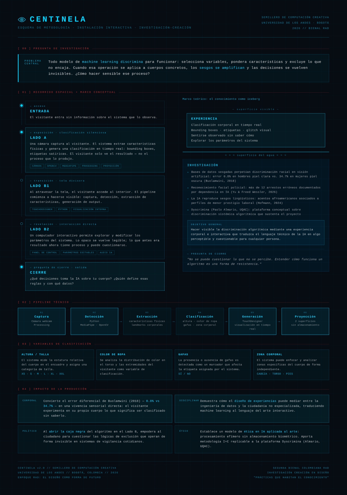
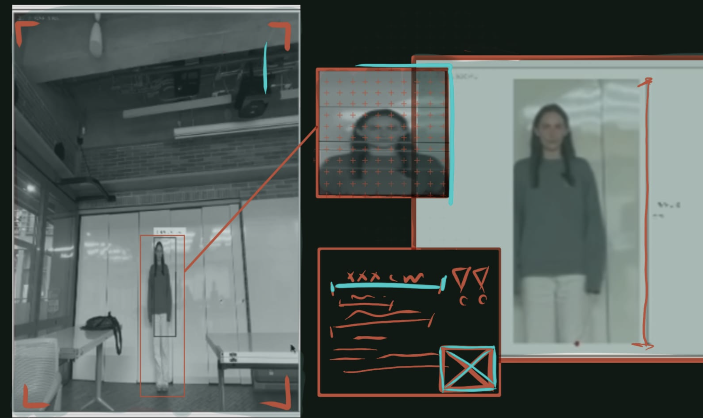
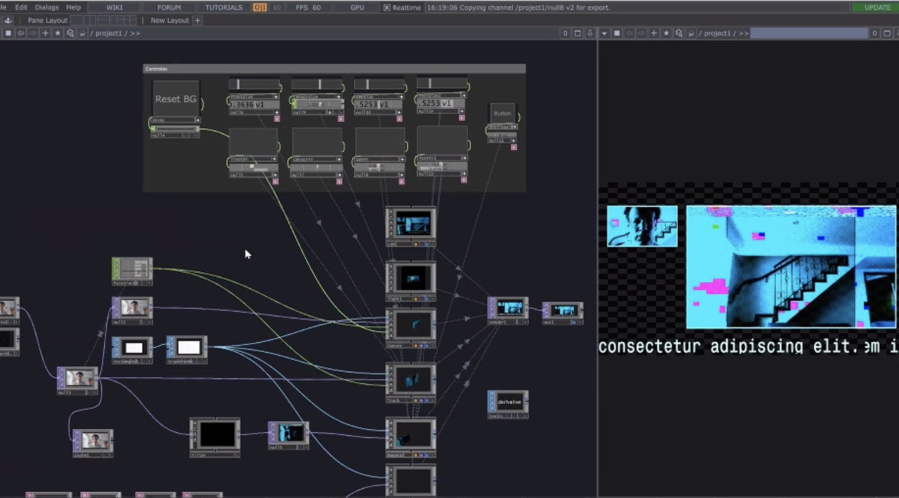

An interactive art installation that makes algorithmic bias visible and embodied. Using computer vision, Centinela silently classifies visitors by physical characteristics — projecting satirical labels in real time — then invites them behind the curtain to understand and interrogate the system that just judged them.



My Role
- Visual and experiential design of the installation — spatial logic, aesthetic language, visitor journey from Side A (unaware) to Side B (revealed)
- UX research through structured observation of visitor reactions and behavioral patterns
- Visual communication design of the technical pipeline for Side B's public-facing display
- Documentation and materials for external festival submissions and funding applications
Visitors enter without knowing they're being observed. A camera captures them; the system extracts physical features and generates real-time classifications: bounding boxes, satirical labels, glitch visuals. They only see the output — never the process that produced it.
Crossing a fabric divide, visitors enter the machine. An interactive panel lets them explore and modify the system's parameters. What was opaque becomes legible — what was a result now has a process, and that process can be questioned.
Photoshop
InDesign
Visual communication
Behavioral analysis
Documentation
User journey mapping
Processing
Python
MediaPipe / OpenCV
Project documentation
Grant writing
Brand experience
English — Advanced
German — Advanced
Portuguese — Basic
Universidad de los Andes
Bogotá, Colombia
Expected 2028
Bogotá, Colombia